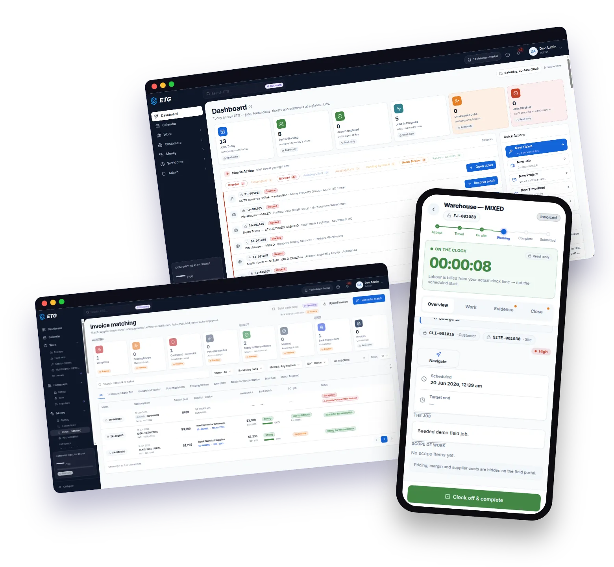
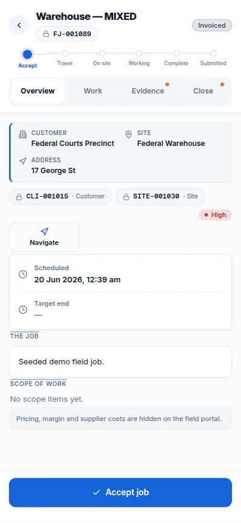
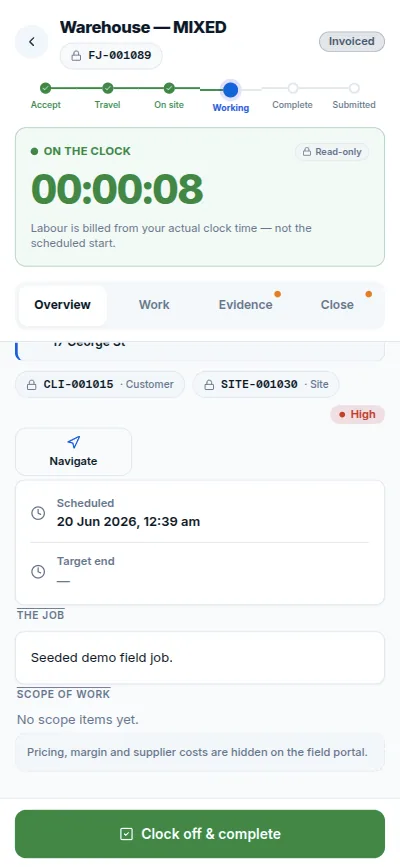
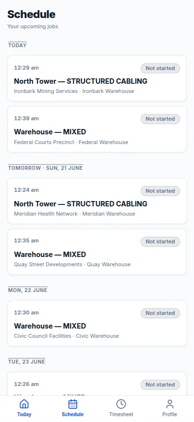
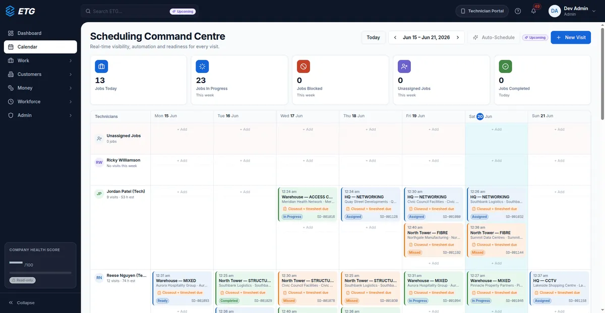
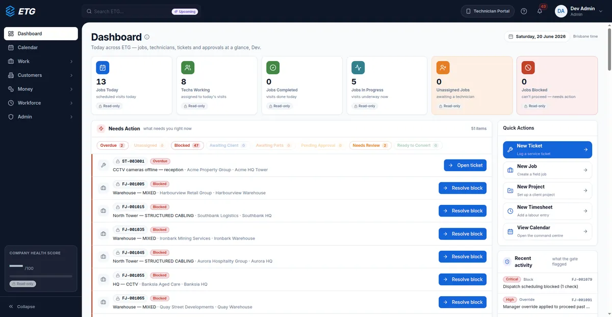
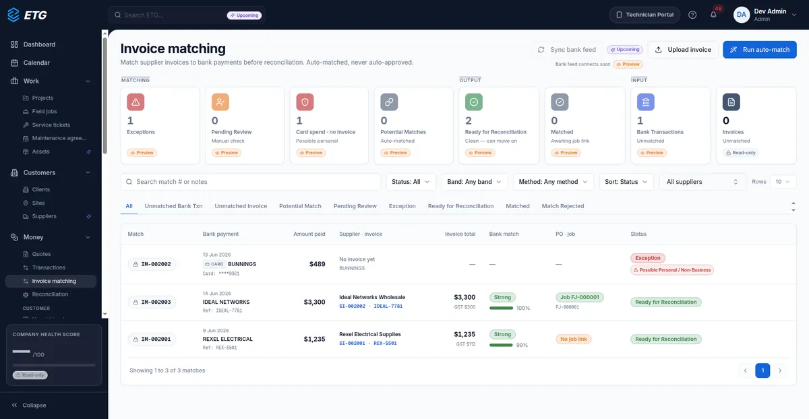
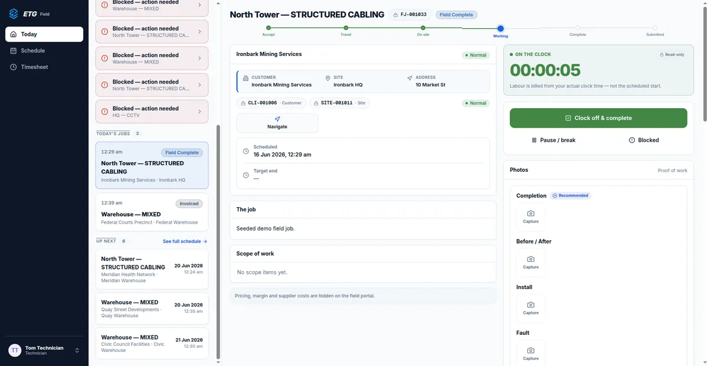

ETG Platform
Field-service operations behind one decision gate.
A field-service platform for an Australian electrical, security and telecom group: admin, client, supplier and technician portals over one API, built to stop about $5k a week lost to unbilled supplier costs and to billing scheduled rather than actual hours.

Stop margin leakage before work ships.
The group runs two businesses that share customers at the same sites. Two costs drove the build: jobs billed from the calendar instead of clocked time, and supplier invoices that never got matched, an estimated $5k a week of leakage. The platform answers with enforcement rather than reporting: a job cannot reach "ready to invoice" until labour is reconciled to clocked time and supplier costs are matched to bank transactions.
- Five portals: operations back office, technician, client, subcontractor, and tokenised public links for quotes, invoices and feedback
- Quote to cash: work requests, quotes, projects, field jobs, service tickets, receivables and retentions
- Procurement and cost: purchase orders, supplier invoices and credit notes, stock and the bank feed
- Workforce: calendar, availability, timesheets, compliance, award rules and field checklists
- Governance: approvals, alerts, enforcement events, SLA targets and the audit log
One decision gate behind every workflow.
- Clients
- Web portalsNext.js 16, React 19, 148 page routes
- Technician portalJobs, closeout, timesheets
- API
- Fastify 5, tRPC 11145 routers, Better Auth
- Gate
- evaluateDecision()Dispatch, closeout and invoicing
- Data and jobs
- Prisma 7, PostgreSQL212 models, money as BigInt cents
- BullMQ worker, RedisReconciliation sweeps, dead-letter queue
Stack
- Next.js
- React
- TanStack Query
- Tailwind CSS
- Fastify
- tRPC
- Prisma
- Better Auth
- Zod
- PostgreSQL
- BullMQ
- Redis
- Docker
- GitHub Actions
- Railway
- Vercel
Key decisions
- 01One pure function, evaluateDecision(), gates every dispatch, closeout and invoice transition and returns structured failure codes; every block and manager override is logged with who and why
- 02Layers enforced by lint: the frontend never imports Prisma and routers reach the database only through repositories, so a violation fails CI
- 03Two businesses that share customers modelled in the schema from the start, with ownership routing on service tickets
- 04Money held as BigInt integer cents on an ex-GST basis, so no financial path uses floating point
What I worked on.
- Designed a 25-package Turborepo (Next.js frontend, Fastify API, BullMQ worker): 145 tRPC routers and 1,000+ procedures over a 212-model Prisma schema (dispatch, timesheets, assets, quoting, billing); money as BigInt cents.
- Enforcement-first decision engine: one pure, unit-testable gate checks every dispatch, closeout and invoice transition, returns structured failure codes, and logs every block and manager override (8 live checks on the dispatch calendar).
- Scored two-hop reconciliation of bank transactions to supplier invoices; jobs cannot be invoiced until costs match.
- Five role-scoped portals over one API across 148 page routes: internal operations, technician mobile, client and subcontractor self-service, and tokenised public links for quotes, invoices and feedback.
- Supplier integration layer: typed adapters for eight external systems, including three trade portals with no public API (SAP Commerce and Magento storefronts) parsed server-side, plus ABN lookup and two payment feeds.
- Credential security: Google Cloud KMS envelope encryption, Argon2 hashing, procedure-level permissions.
- Infrastructure: docker-compose local parity, GitHub Actions CI building GHCR images, Railway and Vercel deploys with post-deploy smoke tests; 30,000+ tests across 2,200+ files.
Five portals, one rulebook.
Technician app, mobile



Operations, web




The same gate runs behind all five portals, so the field, the client and the back office see one state for every job. Counted from the code on 21 September 2026: 145 routers, 1,063 procedures, 212 models, 148 page routes, and 30,000+ tests across 2,200+ files.